Martin Manley: My Life and Death
Born 8-15-53, Died 8-15-13 , Age 60
Playground
I claim to have built the best playground for any homeowner in Johnson County, Kansas and maybe the entire state. Apart from Michael Jackson's Neverland, I’m not sure who had one better.
When I was married the second time, my wife Teri had also been married once before. She had two daughters – Jaime 8 and Marissa 6. We were married a year after we met and right away I started thinking about a playground in the back yard. Eventually, over the course of many months I designed and created it. I constructed it in three segments which were more or less completely independent of the others. I’m extremely proud of the creativity and ingenuity that went into it. It was a great playground for the girls for their childhood.
Jaime just got her masters degree in accounting and Marissa just finished her junior year – both at Kansas State. So, they no longer use it. However, the neighbors do. There are lots of small children in the immediate neighborhood. It’s not uncommon for many of them to be on the playground, but parents are required to watch.
The playground was designed around blue and yellow colors. The club house has a covered portion as you can see below. The clubhouse also has a pull-out table with four small blue and yellow chairs. There are two catwalks elevated above the play area. There are two slides - one long and one short. It includes a disk swing, a bar swing, two regular swings, a hammock, monkey bars, rings, climbing wall with multiple ways of getting up to the top (rope, hand holds, gaps in wood) with a bell at the top to ring, a basketball goal, a rope ladder, a tire swing, a covered porch swing where parents can sit and a blue and yellow plastic box for storing toys. And, the whole thing is on a pit of small gravel. It's located in a drainage area so I ran a drain pipe under the playground.
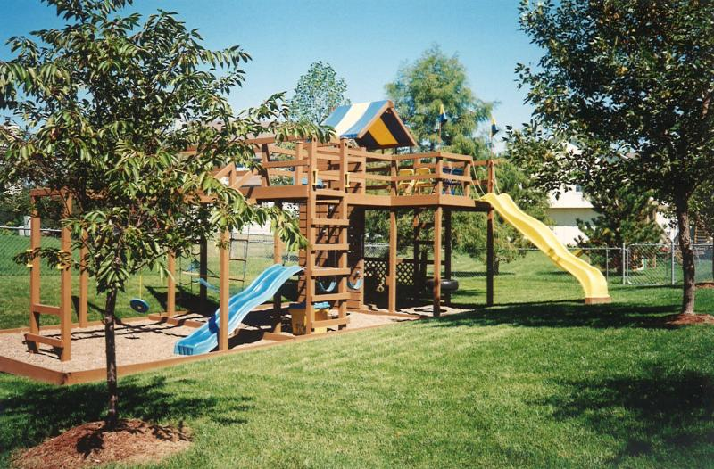
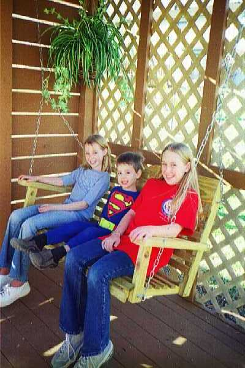
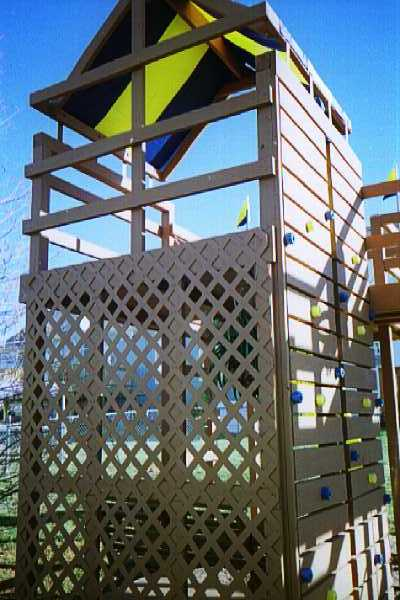
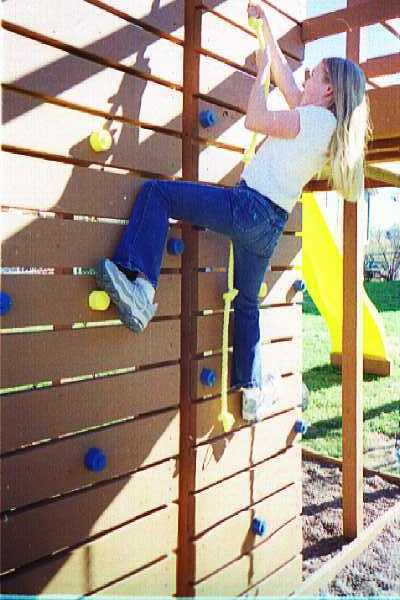
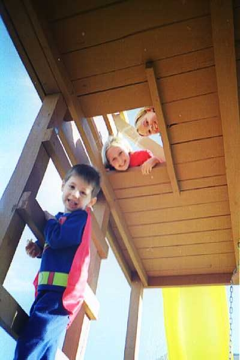
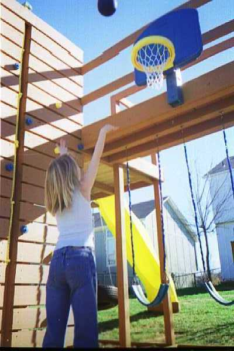

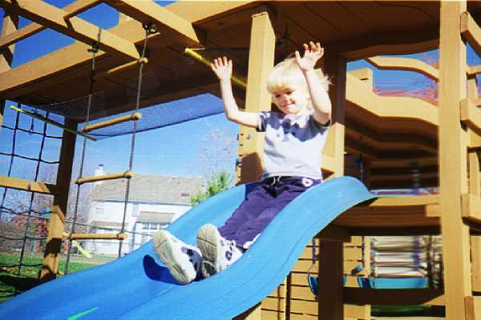
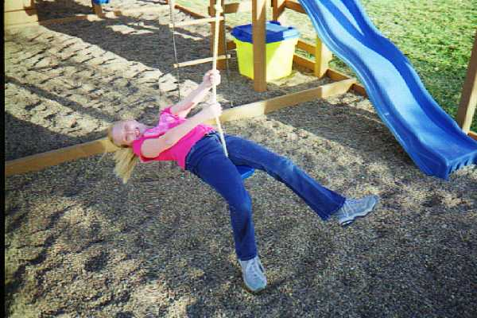
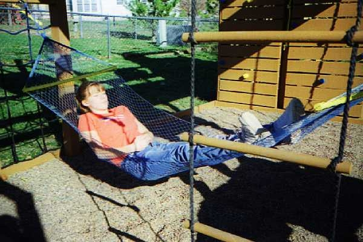
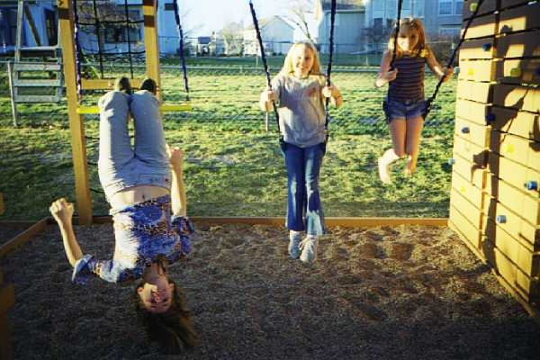
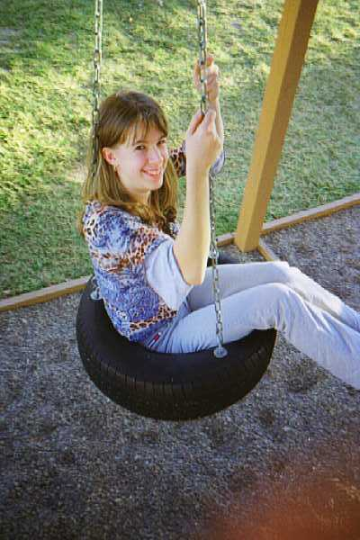
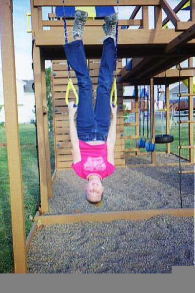